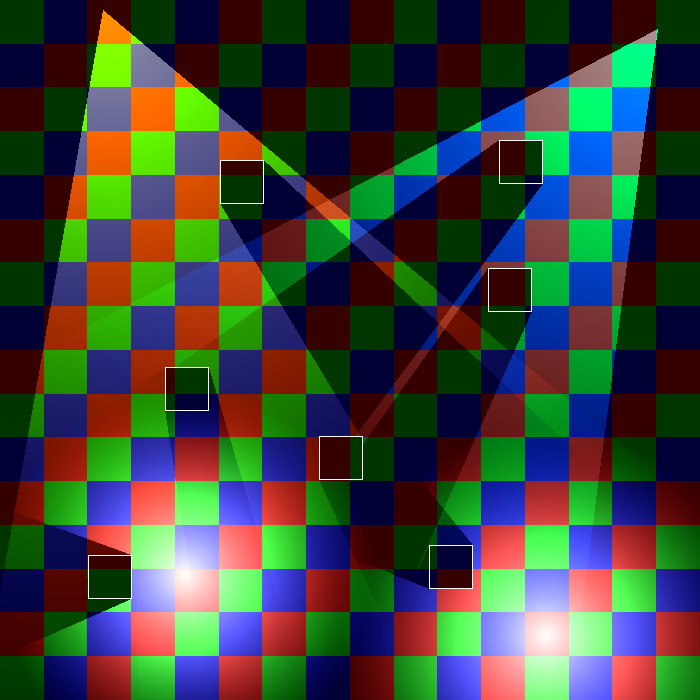
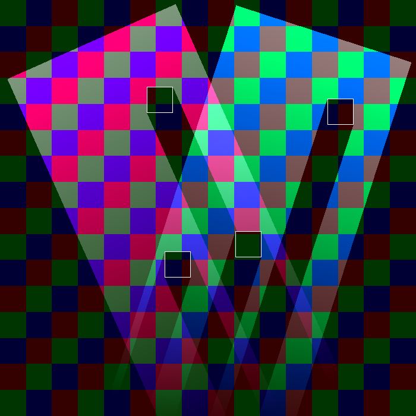

|
Candle
v1.0
2D lighting for SFML
|
|
Candle
v1.0
2D lighting for SFML
|
If you want to use Candle, it is assumed that you are at least familiar with SFML v2.5.1.
The two main objects related to shadow casting in Candle are light sources and edges.
For the lights, there is an abstract class called candle::LightSource, implemented by candle::RadialLight and candle::DirectedLight. They inherit for sf::Drawable and sf::Transformable, so they can be used as the more common SFML entities.
For the edges, there is a structure called candle::Edge, that can represent a segment by the coordinates of its ends. However, the raycasting function requires that the shadow casting edges are stored in a std::vector, so Candle provides a convenient alias for std::vector<candle::Edge> called candle::EdgeVector. This is what you should be using to manage your edges.
They interact through the function candle::LightSource::castLight, that takes two iterators from a candle::EdgeVector and use the edges contained between them to compute the area illuminated by the light source.
Let's see with a sample of code.
The previous code results in a light that follows the mouse and a vertical edge in the center of the screen.
Note how the castLight function is called only when the mouse is moved. Although it shouldn't cost much when a light has a normal amount of edges in range, is preferable not to abuse it unnecesarily. Therefore, we will call it only when the light has been modified or the edges in range have moved.
In the previous example we have used a candle::RadialLight. This is the light type that casts rays in any direction from a single point. The other type is candle::DirectedLight, that casts rays in a single direction, from any point within a segment.
|  Radial lights |  Directed lights |
There are four common parameters to customize light sources, and one parameter specific of each child class.
Alpha component of the light, managed separately from the plain color.
Plain color of the light.
Max range of the iluminated area.
Flag that indicates if the light fades towards the range limit.
Angle (in degrees) that limits the difference between the angles of the casted rays and the rotation of the light.
Maximum allowed distance from the center of the segment to a cast point.